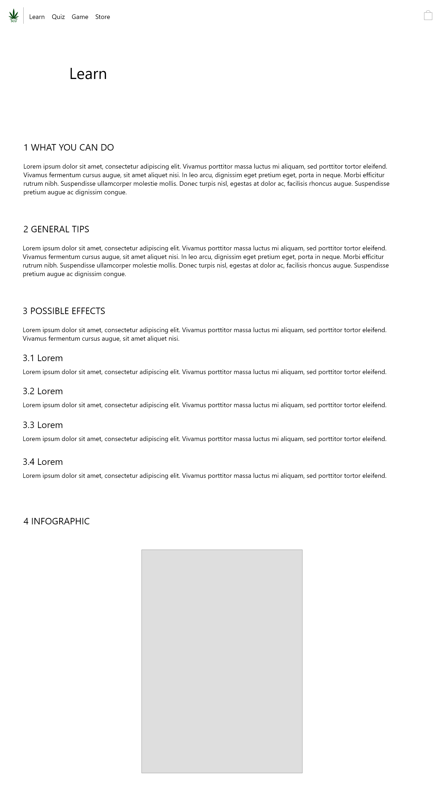
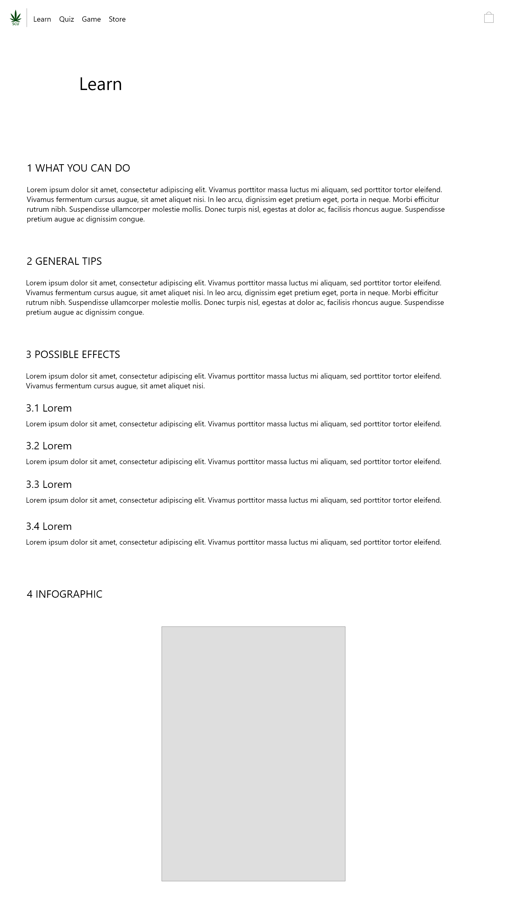

October 2018 - December 2018
Figma, Adobe Illustrator, Adobe Photoshop
UI/UX Designer
Overview
Cannabis was recently legalized in Canada and my group's task was to create a website/service that allowed users to learn about the dangers of excessive use.
The Project
Create a website dedicated to act as a central hub for cannabis information regardless of their usage amounts.
My partner and I conducted research on the various types of cannabis users to determine the level of information we displayed. The results showed us that many people that consume cannabis, in fact are not consistent users but only consume it on special occasions.
This led us to the conclusion that we should incorporate various levels of information, whether you are an avid user, or even have never touched it.
The Process
After knowing our audience, I designed a website that could hold the appropriate amount of information. The steps taken to get to the final product involved creating the Lo-Fi and Hi-Fi mockups both in Adobe Xd.
The low fidelity mockups for the home page and "Learn" page were entirely created by me but I did ask for feedback on it from my partner.
 

The low fidelity mockup of the home page.
The low fidelity mockup of the "Learn" page.
The main efforts of the design went into the home page as we determined it would be the page to capture our target audience. The choices of colour were meant to reflect our intended visitors as well. Red and white being the colours of the Canadian flag were mainly used to reflect our main message of safe usage in Canada after the legalization. The other pages on the site put little emphasis on design, and more on giving information that is presented in a skimmable way.
The "Learn" page below represents what we wanted in a website that is meant to teach something important in a simple way. The page itself is rather lacking of other aspects other than text, but we feel this is best suited for the page.
The user experience journey that is intended would be to feel welcomed by the home page, then continue over to our various forms of learning, such as taking a look at the learn page, doing the quiz, or playing the game. Users should feel inclined to change their cannabis habits to prevent addiction. They are also able to reinforce this idea by buying our clothes if they wish to. Users are able to quickly visit for a tip or fact and leave knowing where they can find more info.
Learnings
1.
Designing an entire website was a lot more difficult than I thought, but I'm glad I got to work on a project like this as I believe it was a valuable experience to improve on my design and UI/UX abilities.
2.
I personally do not consume cannabis so I had to do a lot of surveying and research to find out what to include on the website, which taught me that designing for a certain audience requires more than just a designer's mind.
3.
A problem that I encountered during the project was that I felt limited in what I can put on the website in terms of graphics. I believe this can be solved now by just focusing on the other aspects of the website to makeup for it, such as typography or being consistent with styling.